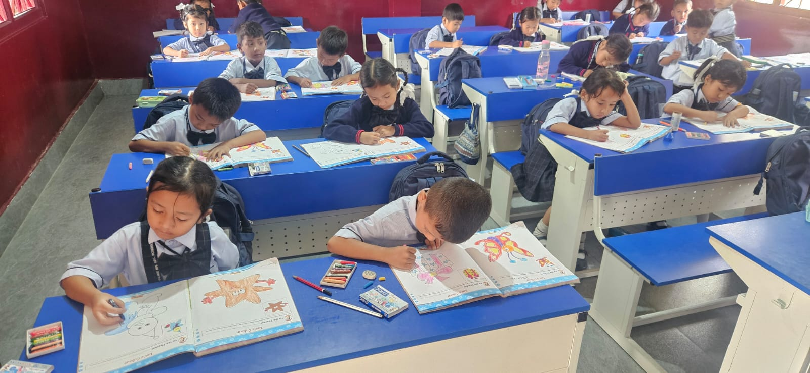

At St Clare Higher Secondary School, our Pre-Primary programme (LKG & UKG) is designed to create a joyful and engaging environment where young learners begin their educational journey with confidence and curiosity.
We focus on early childhood development through a balanced approach that nurtures creativity, communication, and foundational learning skills. Our classrooms are vibrant, safe, and interactive, allowing children to explore and learn through play.
The curriculum emphasizes language development, basic numeracy, motor skills, and social interaction. Through storytelling, music, art, and activity-based learning, children develop essential skills while enjoying every moment of learning.
Our experienced teachers ensure that each child receives personal attention, helping them build confidence, independence, and a love for learning from an early age.
Enquire Now“Every child is encouraged to learn, explore, and grow in an atmosphere of love, discipline, and care.”


We’re delighted that you’re interested in joining the St Clare family. Our Admissions Team will guide you through the process from enquiry to application.
Begin your child’s learning journey with us in a caring, disciplined, and inspiring environment.